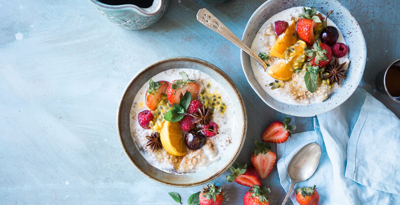
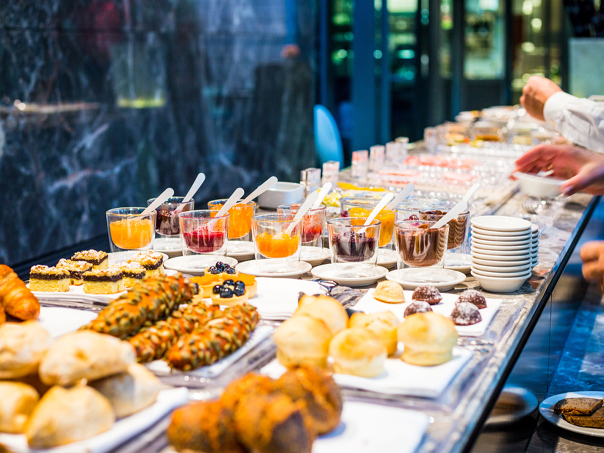
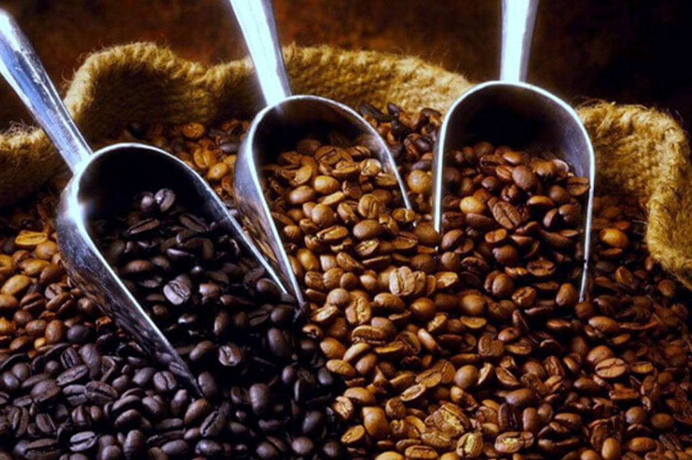

Freshly Brewed Cappuccino with a Hint of Cinnamon
Nothing beats the comforting aroma of a cappuccino topped with frothy milk and a sprinkle of cinnamon. Perfect for cozy mornings or afternoon breaks, this café classic combines rich espresso flavors with a touch of spice, making every sip a delightful experience.
LATEST BLOG
OUR BLOG
Latest Café News & Articles

5 Reasons Why Freshly Brewed Coffee Tastes Better
Discover why freshly ground beans and careful brewing make every cup richer, smoother, and full of flavor.
Read More »
Perfect Pastry Pairings with Your Morning Latte
From buttery croissants to chocolate muffins, learn which pastries pair best with your favorite latte.
Read More »
Latte Art: Turning Every Cup into a Masterpiece
Our baristas share tips and tricks on how they create beautiful hearts, tulips, and rosettas in your coffee.
Read More »
Why Our Café is the Perfect Spot to Unwind
From cozy seating to freshly brewed coffee, discover why our café has become the go-to place for friends and families.
Read More »